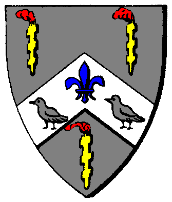

|

|
Das schwarze Brett
|
|
| Übersicht,
Anschläge und Stammtisch (RPG) |
|
Abschied
|
| John Dow (RIP) |
Heute Nacht besuchte mich ein Elf, um mir mitzuteilen, dass für mich die letzten 10 Tage meines Lebens auf dieser Welt angebrochen sein. Zuerst wollte ich diesem keinen Glauben schenken, aber als der Elf mir eine längere Zeit versuchte Weis zu machen, dass man mich in einer anderen Welt dringender bräuchte, akzeptierte ich es.
Ich hatte in dieser Welt eine Menge Spaß und dafür möchte ich mich nochmal bei vielen Leuten bedanken.
Zuerst einmal an das Frankenreich, dass mich als kleinen Elfen aufgenommen und großgezogen hat.
Zum anderen an den Blutgieriger Berserkerkult, der mir gezeigt hat, wie man richtig kämpft und wer die Bösen auf dieser Scherbe sind.
Und auch den Rittern der Tafelrunde. Diese zeigten mir, dass nicht alle Bewohner der Scherbe böse sind.
Zuletzt bedanke ich mich noch bei meinen Feinden. Ihr habt mir oft eine Menge Spaß beschert, wenn ihr auch die meiste Zeit weggelaufen seid.... vor allem sind dort die Schwingen der Sieben zu erwähnen.
Den Karawanenkönig habe ich selber leider nie kennengelert um ihn einmal zu verhauen, weil dieser sich ja nie aus seinem Gebiet heraustraut. Es wäre mir eine Ehre nochmal gegen euch, Falster, zu kämpfen und euch das Fell über die Ohren zu ziehen... so wie ich es oft mit eurem Dienstboten Levthan gemacht habe!
Ich wünsche allen noch viel Spaß auf diese Welt... und vergesst mich nicht ;)
Greez, Revelator á Chîroqué
((P.s. Für meinen ersten RPG Theard nicht schlecht oder? ^^))
Baron Revelator á Chîroqué,
Vorsteher von Esturia Sapientia
Zur 6. Stunde am 41.Saatmond im Jahre 431 |
04.11.07 15:10
 |
|
| Warstein (RIP) |
machs gut auf deinen Wegen
und lass dich nicht ärgern
Baron Warstein,
Vorsteher von Hohe Feste des Frankenreiches,
Vize Nationsführer,Bereich Neldoreth
Zur 6. Stunde am 41.Saatmond im Jahre 431 |
04.11.07 15:15
|
|
| Smoin cónuî Amdîr (RIP) |
Der nächste...
Sir Smoin cónuî Amdîr,
Anführer der glorreichen Nation "Clan der Schneewölfe",
Ehemann der reizenden Seraphine Thálra
Zur 6. Stunde am 41.Saatmond im Jahre 431 |
04.11.07 15:19
|
|
Cadacan von Tacheless
  |
machs gut, kleiner mann
Fürst Cadacan von Tacheless,
Vorsteher von Burg Hohenstaufen,
Anführer der glorreichen Nation "Schwingen der Sieben",
Krieger des Hains
Zur 6. Stunde am 41.Saatmond im Jahre 431 |
04.11.07 15:22
|
|
Dubliner
  |
Du hast schon Alles erlebt auf der scherbe......deswegen ist es nicht verwunderlich dass du in eine andere Welt gehen möchtest.
Ich wünsche dir nur das Allerbeste für deine weiter Zukunft.
Du wirst mir fehlen.......
Lady Dubliner
Zur 7. Stunde am 41.Saatmond im Jahre 431 |
04.11.07 15:30
|
|
| Vincent Aquila (RIP) |
Alles gute alter Gauner.
Viel Spass in der nächsten Welt!
Fürst Vincent Aquila,
Vorsteher von Druidenforst,
Anführer der glorreichen Nation "Templer"
Zur 8. Stunde am 41.Saatmond im Jahre 431 |
04.11.07 15:42
|
|
Priboi
  |
hey revelator... mein einstiger Nachbar und Feind ;)
Machs gut !!
Priboi,
Hohepriester im Dienste des einzig wahren Glaubens an Urvan
Zur 9. Stunde am 41.Saatmond im Jahre 431 |
04.11.07 15:53
|
|
| Erik der Wikinger (RIP) |
na dann viel Glück auf deinen weitern Wegen denke mal nicht das du zu ruhe kommen wirst
Graf Erik der Wikinger,
Vorsteher von Kap der Freiheit
Zur 9. Stunde am 41.Saatmond im Jahre 431 |
04.11.07 16:01
|
|
| Elijah (RIP) |
Je schöner und voller die Erinnerung,
desto schwerer ist die Trennung.
Aber die Dankbarkeit verwandelt die Erinnerung,
in eine stille Freude.
Man trägt das vergangene Schöne nicht wie einen Stachel,
sondern wie ein kostbares Geschenk in sich.
*ein Pfotenabdruck*
Sir Elijah,
Vorsteher von Tortuga,
Priester im Dienste des einzig wahren Glaubens an Tura,
Anführer der glorreichen Nation "Die Fraggles"
Zur 10. Stunde am 41.Saatmond im Jahre 431 |
04.11.07 16:18
|
|
| Oki ad Argos (RIP) |
Ich werde es vermissen, deine Waffen zu warten oder Dir neue zum testen mitzugeben.
Viel Glück auf deinem Weg.
Pfalzgraf Oki ad Argos,
Vorsteher von Argos ad Argolis,
Anführer der glorreichen Nation "Argos Legion",
Verlobter der reizenden Aimil Liusadh
Zur 14. Stunde am 41.Saatmond im Jahre 431 |
04.11.07 17:03
|
|
| Elraldur (RIP) |
Reve, alter Halunke!
Bis zuletzt habe ich gehofft, dass du es dir nochmal anders überlegst, es wird schwer, diese Lücke zu füllen
Es war mir eine große Ehre und eine noch größere Freude mit dir an der Seite gekämpft und gelacht zu haben.
Wir werden dich vermissen und pass auf dich auf!
Sir Elraldur,
Vorsteher von Caras en Elvellyn,
Hohepriester im Dienste des einzig wahren Glaubens an Urvan,
Legionär Urvans,
Konventsbeauftragter
Zur 15. Stunde am 41.Saatmond im Jahre 431 |
04.11.07 17:20
|
|
| Donnermaus (RIP) |
reve mein alter freund *schnief*
viel spass in der anderen welt , und vergess uns nicht :)
Donnermaus,
Stellvertretende Nationsführerin
Zur 19. Stunde am 41.Saatmond im Jahre 431 |
04.11.07 18:16
|
|
| Celebrimbor (RIP) |
Auf Wiedersehen mein Freund! Wir hatten eine gute Zeit zusammen!
Freiherr Celebrimbor de Corazon,
Vorsteher von Belthil,
Anführer der glorreichen Nation "Ero´s Attransis",
Verlobter der reizenden Greebo von Lansk
Zur 20. Stunde am 41.Saatmond im Jahre 431 |
04.11.07 18:34
|
|
| Ibn de Witt (RIP) |
Fuer jeden wird die Zeit kommen diese Entscheidung zu treffen. Gute Reise, alter Freund.
Graf Ibn de Witt,
Vorsteher von Esturia Draconis,
Anführer der glorreichen Nation "Kaffeekränzchen"
Zur 21. Stunde am 41.Saatmond im Jahre 431 |
04.11.07 18:45
|
|
| Farukas von Kazaana (RIP) |
Sollst du den Frieden finden den du verdient hast.
Man wird dich sicher nie vergessen!
Freiherr Farukas von Kazaana,
Anführer der glorreichen Nation "Servitus Sanguis",
Ehemann der reizenden Ascua de Espanto,
Oberster Feldherr,
Oberhaupt der Familie von Kazaana
Zur 24. Stunde am 41.Saatmond im Jahre 431 |
04.11.07 19:26
|
|
| Meklun Wellenreiter (RIP) |
Ich wünsche dir alles nur erdenklich Gute auf deinen weiteren Reisen!
Vielleicht sehen wir uns ja wieder in einer anderen Welt....
Meklun Wellenreiter,
Hohepriester im Dienste des einzig wahren Glaubens an Bendur
Zur 4. Stunde am 42.Saatmond im Jahre 431 |
04.11.07 20:23
|
|
Slam ODR
  |
Alles Gute!
Slam ODR,
Hohepriester im Dienste des einzig wahren Glaubens an Pheron,
Anführer der glorreichen Nation "Domega´z Omeganore"
Zur 7. Stunde am 42.Saatmond im Jahre 431 |
04.11.07 21:08
|
|
| Irian von Tacheless (RIP) |
Mögest du Frieden finden, alter Feind.
Unvergessen für mich werden die "Treffen" mit dir bleiben.
Egal wie sie endeten, haben sie mir immer sehr viel Spaß bereitet.
Leider können wir unsere Wette nicht zu Ende führen, doch wenn man alle Kämpfe betrachtet, dann führst du doch sehr deutlich.
Dafür gebührt dir all mein Respekt.
Urvan sei mit dir.
Irian von Tacheless,
Hohepriester im Dienste des einzig wahren Glaubens an Urvan,
Großritter der Schwingen,
Anführer der Legion Urvans,
Verlobter der reizenden Narndil Biunda
Zur 8. Stunde am 42.Saatmond im Jahre 431 |
04.11.07 21:14
|
|
| zardoz (RIP) |
alles gute auf den neuen wegen, wir sehen uns wieder
prost
Baron zardoz,
Vorsteher von Neu Frankenhain,
Fränkischer Drachenbändiger
Zur 8. Stunde am 42.Saatmond im Jahre 431 |
04.11.07 21:25
|
|
| Aleya Sophija (RIP) |
Oh nein, was soll ich denn ohne "dat Reve-Hasi "machen *heul, schnief, schluchtz*
Markgräfin Aleya Sophija,
Vorsteherin von Esturia Nova,
Hexe von Esturien
Zur 9. Stunde am 42.Saatmond im Jahre 431 |
04.11.07 21:29
|
|
Tar Aldarion
  |
Reve, machs gut, da wo du hin gehst, ich bezweifle zwar dass ich dich an einem Ort wo ein Elf gebraucht wird wiedersehen kann, aber vielleicht klappts ja doch irgendwann.
Aleya, lass den Kopf nicht hängen, er wird dort mehr gebraucht als hier. Hier ist eh alles verloren.
*wendet sich vom Anschlagsbrett ab und legt sich wieder faul in die Sonne*
Tar Aldarion,
Kardinal im Dienste des einzig wahren Glaubens an Urvan
Zur 13. Stunde am 42.Saatmond im Jahre 431 |
04.11.07 22:26
|
|
| Hator (RIP) |
Es war mir eine Freude dich gekannt zu haben Reve...machs gut!
Pfalzgraf Hator,
Vorsteher von Moria,
Ehemann der reizenden Amyria,
Dichtezwerg der Propheten des Frostes
Zur 14. Stunde am 42.Saatmond im Jahre 431 |
04.11.07 22:51
|
|
Frathag Graubart
  |
Der Tod von Scherblingen ist immer ein Grund zur Trauer. Noch mehr trifft es mich jedoch, wenn ein Bewohner der Sonnensteppe von uns geht. Ohne euch wird die Insel leerer sein, auch stiller.
Mögen Gaias Kinder über eure Seele wachen!
Baron Bruder Frathag Graubart,
Vorsteher von Bel en Orod
Zur 21. Stunde am 42.Saatmond im Jahre 431 |
05.11.07 0:17
|
|
| Titania Eilistraee (RIP) |
auf wiederbald
Markgräfin Titania Eilistraee,
Vorsteherin von Küstenbrise,
Moladh an Ealain do Caint,
Verlobte des ehrenwerten Jadrus von Mondstein
Zur 17. Stunde am 48.Saatmond im Jahre 431 |
06.11.07 9:06
|
|
| Antaras (RIP) |
Ich danke dir Revelator,
du hast mich viel gelehrt, lass es dir gut gehen in der neuen Welt!!!
Baron Antaras,
Vorsteher von Rosaleda,
Verlobter der reizenden Landuriel Elemmiire
Zur 22. Stunde am 48.Saatmond im Jahre 431 |
06.11.07 10:14
|
|
| Xyron (RIP) |
Mein Herz blutet bei diesen Worten.
Eine Ehre war es mir an deiner Seite zu stehen.
Xyron,
Anführer der glorreichen Nation "Die Wächter von Kazaana"
Zur 6. Stunde am 59.Saatmond im Jahre 431 |
08.11.07 20:07
|
|
| Ruor Grimbart (RIP) |
Hola, wenn jemand noch zu Lebzeiten von seinen Feinden und Freunden gleicher Massen begrüsst wird und dankbare Abschiedsworte erfährt... Dann kann man wohl davon ausgehen, der Typ hat sein Leben gut und ehrvoll gelebt!
Dann sag ich auch mal unbekannter Weise.
Hola, machs gut, du!
Baron Ruor Grimbart,
Vorsteher von Gathol Melandoria,
Anführer der glorreichen Nation "Ar Khazâd",
Clanlord der Narag Burk
Zur 14. Stunde am 61.Saatmond im Jahre 431 |
09.11.07 9:14
|
|
| Fáin Cortez (RIP) |
Wertes Volk der Scherbe.
Frei nach dem Motto "über die Toten nur Gutes" begeben wir uns heute unter dem Begriff von Moral und Anstand an dieses Anschlagsbrett um einen der "grössten Helden der Scherbe" zu ehren.
Und natürlich fallen Kommentare wie "viel Glück im nächsten Leben" und "mögen die Sieben dich in ihren Schoß aufnehmen". Warum auch nicht? Immerhin hatte er sicher Freunde und Verwandte, Leute die ihm positiv gesinnt waren und ihn in ihre Herzen schlossen.
Ein großer Mann möchte man meinen, der sich verdient hat, in den Schoß Turas zu gelangen und dort sein Leben nach dem Tod zu leben.
Doch noch ist er nicht tot. Ergo kann ich auch keinen Grund dafür sehen, dass die Scherbe sich so mit Lügen versündigt.
Warum sind wir nicht ehrlich?
Selbst jetzt auf seinem letzten Weg, in seinen letzten Tagen auf dieser Scherbe, da er über seine Schwäche weint und uns glauben macht, er würde Reinigung durch das Feuer und den Tod erfahren, selbst jetzt noch, da er seinen Geistern, die er rief in die Augen blicken wird, da er sie riecht, wie sie nach Verwesung stinken und nach Vergessenheit, selbst jetzt noch, rennt er umher und dient den Dämonen, indem er umhergeht und meuchelt, mordet und sich versündigt.
Welch Schmierentheater die Scherbe hier spielt!
Noch nichtmal unter der Erde, werden schon die Banner gehisst, auf denen alle ihre Lügen kundtun - wie gern sie ihn hatten, wie lieb und reizend er war und wie gut er den Sieben gedient hat.
Aye, den Absieben diente er ziemlich gut in seinem Leben voller Mord, Plünderung und Raubüberfall.
Wir wollen ihn in Erinnerung behalten? Wofür? Dafür, dass er sich nie aus dem Schatten Amorous Mearas und Kinggidoras bewegen konnte? Dafür, dass er als lächerliche Imitation des großen anGurs endet und sich selbst auf eine Stufe jener großen Helden stellt, die er nie hat übertreffen können?
Aye, er mag stark gewesen sein, doch was hat er geschafft? Zeigt mir seine Triumphe, zeigt mir, wen er bewegt hat und zeigt mir wo er der Held ist, als den ihn alle hier beweinen.
Nein, liebe Scherbe, ihr belügt nicht nur diejenigen, die dies hier lesen, ihr belügt euch selbst, wenn ihr ihm so das Gefühl gebt er wäre jemand gewesen, für den es sich lohnt auch nur eine Träne zu weinen.
Wenn ich einst das zeitliche segne, will ich, dass Feiern stattfinden, will ich, dass die Menschen, die Elfen, die Zwerge, die Halblinge, die Halborks und ganz besonders die Wichtel sich freuen. Sie sollen Freudentränen weinen, dass ich weg bin und nie wieder komme, denn ich will auf meinem Totenbett die Ehrlichkeit hören, die mir zu Lebzeiten nicht vergönnt war.
Ich bin vielleicht der einzig ehrliche, wenn ich sage:
"Möge Wendaria deiner verkommenen Seele gnädig sein, verdreckter Hund, dein Tod ist eine Bereicherung für die Scherbe, dein Ableben eine Wohltat für all jene, die dich hassten und hassen. Stirb langsam und qualvoll, denn deine Seele ist verdorben von jenen Dämonen, die du beschwörtest.
Dein Tod steht dir besser, als die blanke Rüstung und deine Beerdigung wird ein Fest, welches ich begiessen werde, Flasche um Flasche, Faß um Faß, bis meine ganze Mannschaft sich die Seele aus dem Leib kotzt und damit das heraufwürgt, was deine Existenz war.
Stirb wohl, Namenloser, die Scherbe wird dich bald vergessen".
MfG.
Sir Fáin Cortez,
Hohepriester im Dienste des einzig wahren Glaubens an Wendaria,
Anführer der glorreichen Nation "Freibeuter",
Ehemann der reizenden Isabella Cortez,
El Capitan
Zur 4. Stunde am 64.Saatmond im Jahre 431 |
09.11.07 23:35
|
|
| Ardán Schwarzauge (RIP) |
*Steht kopfschüttelnd vor dem Anschlagsbrett und liest den letzten Beitrag Fains. Je weiter er dem Ende des Textes kommt, desto heftiger wird sein Kopfschütteln.*
Potztausend, da brat mir doch einer einen Wolpertinger! Entweder ich bin nicht mehr ganz richtig im Kopf, oder Fain ist es. Letzteres ist zwar wahrscheinlicher, aber dennoch bereitet mir das hier irgendwie Sorgen:
Ich stimme in so ziemlich jedem Wort mit Fain Cortez überein. Es ist nicht etwa nur eine kleine Textpassage, die meine Zustimmung findet, nicht etwa nur ein kleiner Gedanke, der im Keim mit meinen Gedankengängen übereinstimmt. Nein, es ist jedes einzelne Wort. Und so wiederhole ich die wahrsten Worte, die an diesem Anschlag zu lesen waren sehr gerne:
Möge Wendaria deiner verkommenen Seele gnädig sein, verdreckter Hund, dein Tod ist eine Bereicherung für die Scherbe, dein Ableben eine Wohltat für all jene, die dich hassten und hassen. Stirb langsam und qualvoll, denn deine Seele ist verdorben von jenen Dämonen, die du beschwörtest.
Dein Tod steht dir besser, als die blanke Rüstung und deine Beerdigung wird ein Fest, welches ich begiessen werde, Flasche um Flasche, Faß um Faß, bis meine ganze Mannschaft sich die Seele aus dem Leib kotzt und damit das heraufwürgt, was deine Existenz war.
Stirb wohl, Namenloser, die Scherbe wird dich bald vergessen!
*wendet sich dann, immer noch kopfschüttelnd ab*
Markgraf Ardán Fálmanôr, der Deichgraf,
Vorsteher von Dîn Nerôná,
Verlobter der reizenden Dagorineth,
Konsul der Republik der Stille
Zur 24. Stunde am 65.Saatmond im Jahre 431 |
10.11.07 9:49
|
|
sundancer
 |
Auch wen Ihr mittlerweile Hohepriester seid, Fain Cortez, so habt Ihr in Eurem Leben eines nicht gelernt:
Respekt gegenüber Anderen, auch gegenüber Feind.
Om Gegensatz zu machen anderen hat Revelator á Chîroqué seine Kämpfe mit dem Schwert und dem Beil geführt, und nicht mit Gossensprache und Intrigen.....
Revelator á Chîroqué...
Machs gut, lieber Feind.......
Schade das die Zeit nicht mehr reicht, in der Ich trainieren und üben könnte, um Dir zumindest einen Teil der Prügel heimzuzahlen, die Ich bezogen habe.......
Wen Du deinen Frieden suchst, dann finde IHn...
Suchst Du neue Aufgaben in einer anderen Welt:
Ich hoffe Wir treffen uns wieder!
sundancer
Zur 6. Stunde am 67.Saatmond im Jahre 431 |
10.11.07 16:49
|
|
| Titania Eilistraee (RIP) |
Ach, werter Sundancer, dann kennt ihr den Herren á Chîroqué aber schlecht. Gossensprache und Intrigen waren doch mitunter welche von seinen Spezialitäten.
Und wirklich Respekt gegenüber seinen Feinden hatte er wiederrum auch nicht.
daher nur, auf wiederbald
Gräfin Titania Eilistraee,
Vorsteherin von Küstenbrise,
Moladh an Ealain do Caint,
Verlobte des ehrenwerten Jadrus von Mondstein
Zur 7. Stunde am 67.Saatmond im Jahre 431 |
10.11.07 17:05
|
|
| Ibn de Witt (RIP) |
Geht eure Stadt wiederaufbauen und sprecht nicht von Dingen von denen ihr keine Ahnung habt. Wenn ich hier die kleinen Anhaengsel Falsters von Intrigen anderer Sprechen hoere, beschleicht mich langsam das Gefuehl das Gehirn muss beim Eintritt in die Lehenskette am Eingang abgegeben werden.
Graf Ibn de Witt,
Vorsteher von Esturia Draconis,
Anführer der glorreichen Nation "Kaffeekränzchen"
Zur 8. Stunde am 67.Saatmond im Jahre 431 |
10.11.07 17:25
|
|
sundancer
|
Seht ihr, Herr Ibn de Witt, genau das meinte ich dann mit Gossensprache...
Im übrigen: wieso wiederaufbauen??
Ich kann mich beim besten willen Willen nicht erinnern, jemals eine Stadt verloren zu haben.....
sundancer
Zur 9. Stunde am 67.Saatmond im Jahre 431 |
10.11.07 17:34
|
|
| Titania Eilistraee (RIP) |
Ach, lieber Graf deWitt, ob ich wohl auch mal bei Esturia Draconis auf Kaffee und Kuchen eingeladen werde?
Immerhin dürfte ich wohl den Ansprüchen des Herren genüge tragen dürfen, denn von Gossensprache, mangelndem Respekt und Anstandslosigkeit habe ich ja, wie richtig festgestellt, keine Ahnung.
Gräfin Titania Eilistraee,
Vorsteherin von Küstenbrise,
Moladh an Ealain do Caint,
Verlobte des ehrenwerten Jadrus von Mondstein
Zur 8. Stunde am 68.Saatmond im Jahre 431 |
10.11.07 22:53
|
|
| Mordow (RIP) |
Revelator á Chîroqué - ein Name den wir nicht vergessen werden.
Revelator á Chîroqué - ein Krieger, den wir nicht vergessen werden.
Revelator á Chîroqué - ein Freund, der nie vergessen werden wird.
Revelator á Chîroqué - mir warst Du ein Freund, ein Waffenbrunder, ein Gefährte, den ich nicht vergesen werde.
Dein Tod wird eine tiefe Wunde hinterlassen bei denen Freunden. Wir ehren Dich auch nach Deinem Tod, denn Du warst einer von uns, primus inter pares - Erster unter Gleichen. Du warst ein wahrer Ritter und wirst für uns immer unvergessen bleiben.
Leb wohl - Freund.
Schwert zum Grusse.
Pfalzgraf Mordow,
Vorsteher von Esturia Centralis,
Anführer der glorreichen Nation "Ritter der Tafelrunde",
Ehemann der reizenden Zorra Feuerherz
Zur 6. Stunde am 73.Saatmond im Jahre 431 |
12.11.07 2:28
|
|
| Falke (RIP) |
war mir ne ehre ...
hau rin ....
Sir Falke
Zur 12. Stunde am 74.Saatmond im Jahre 431 |
12.11.07 9:30
|
|
Galaton Dragus
 |
Elender Hühnerdieb, was ist mit meiner Revanche?
König Galaton Dragus,
Vorsteher von Bethana,
Anführer der glorreichen Nation "Vertex Time Travellers",
Ehemann der reizenden Tonja Dragus
Zur 9. Stunde am 76.Saatmond im Jahre 431 |
12.11.07 19:58
|
|
| Kage Hitomi (RIP) |
Machs gut, alter Feind.
Freiherr Kage Hitomi,
Vorsteher von Dîn Aderthaîd,
Konsul der Republik der Stille
Zur 10. Stunde am 76.Saatmond im Jahre 431 |
12.11.07 20:09
|
|
| DoomsdayProphet (RIP) |
Ich glaubte kaum daran den Tag erleben zu dürfen, an dem ich nicht Fain Cortez in allerlei Dingen des Lebens wiedersprechen müsste. Und nun fällt er tatsächlich ohne eigenes Zutun über mich herein und mir fehlen die Worte.
DoomsdayProphet,
Priester im Dienste des einzig wahren Glaubens an Urvan,
Anführer der glorreichen Nation "Mad Phoenix Empire",
Großadmiral des Empire
Zur 18. Stunde am 80.Saatmond im Jahre 431 |
13.11.07 20:29
|
|
Übersicht,
Anschläge und Stammtisch (RPG)
|
|
|
|